Στον παρακάτω πίνακα παρουσιάζονται οι εβδομαδιαίες ώρες που
χρειάζεται να εργαστεί μια οικογένεια που λαμβάνει το ελάχιστο εγγυημένο
εισόδημα, ώστε να εξέλθει από τη φτώχεια (δείκτης
WORKEXPOV), όπως αυτός αντλήθηκε από την αντίστοιχη σελίδα
του OECD.
Το όριο της φτώχειας στην προκειμένη περίπτωση υπολογίζεται ως το 50%
του διάμεσου διαθέσιμου εισοδήματος στη χώρα.
Τα δεδομένα αφορούν (SUBJECT):
ζευγάρια χωρίς εργασία με 2 παιδιά
(UNEMP_COUPL2CHLD),
ζευγάρια χωρίς εργασία, που δεν έχουν 2 παιδιά
(UNEMP_COUPLNOCHLD),
ένα άτομο με δύο παιδιά (SNGL2CHLD),
ένα άτομο χωρίς παιδιά (SNGLNOCHLD).
| STRUCTURE | STRUCTURE_ID | STRUCTURE_NAME | ACTION | LOCATION | Country | INDICATOR | Indicator | SUBJECT | Subject | MEASURE | Measure | FREQUENCY | Frequency | TIME_PERIOD | Time | OBS_VALUE | Observation.Value | OBS_STATUS | Observation.Status | UNIT_MEASURE | Unit.of.Measures | UNIT_MULT | Multiplier | BASE_PER | Base.reference.period |
|---|---|---|---|---|---|---|---|---|---|---|---|---|---|---|---|---|---|---|---|---|---|---|---|---|---|
| DATAFLOW | OECD:DF_DP_LIVE(1.0) | OECD Data Archive | I | AUS | Australia | WORKEXPOV | Working hours needed to exit poverty | UNEMP_COUPL2CHLD | Jobless couple, 2 children | HR_AVEWAGE | Hours at average wage | A | Annual | 2004 | NA | 0 | NA | A | NA | NA | NA | NA | NA | NA | NA |
| DATAFLOW | OECD:DF_DP_LIVE(1.0) | OECD Data Archive | I | POL | Poland | WORKEXPOV | Working hours needed to exit poverty | UNEMP_COUPLNOCHLD | Jobless couple, no child | HR_MINWAGE | Hours at minimum wage | A | Annual | 2001 | NA | 0 | NA | A | NA | NA | NA | NA | NA | NA | NA |
| DATAFLOW | OECD:DF_DP_LIVE(1.0) | OECD Data Archive | I | SVK | Slovak Republic | WORKEXPOV | Working hours needed to exit poverty | UNEMP_COUPLNOCHLD | Jobless couple, no child | HR_67PC_AVEWAGE | Hours at 67% average wage | A | Annual | 2001 | NA | 0 | NA | A | NA | NA | NA | NA | NA | NA | NA |
| DATAFLOW | OECD:DF_DP_LIVE(1.0) | OECD Data Archive | I | POL | Poland | WORKEXPOV | Working hours needed to exit poverty | UNEMP_COUPL2CHLD | Jobless couple, 2 children | HR_AVEWAGE | Hours at average wage | A | Annual | 2001 | NA | 0 | NA | A | NA | NA | NA | NA | NA | NA | NA |
| DATAFLOW | OECD:DF_DP_LIVE(1.0) | OECD Data Archive | I | DNK | Denmark | WORKEXPOV | Working hours needed to exit poverty | UNEMP_COUPLNOCHLD | Jobless couple, no child | HR_AVEWAGE | Hours at average wage | A | Annual | 2001 | NA | 0 | NA | A | NA | NA | NA | NA | NA | NA | NA |
| DATAFLOW | OECD:DF_DP_LIVE(1.0) | OECD Data Archive | I | DNK | Denmark | WORKEXPOV | Working hours needed to exit poverty | UNEMP_COUPLNOCHLD | Jobless couple, no child | HR_67PC_AVEWAGE | Hours at 67% average wage | A | Annual | 2001 | NA | 0 | NA | A | NA | NA | NA | NA | NA | NA | NA |
Ακολουθεί μια συνοπτική παρουσίαση της κατάστασης στα χρόνια 2001-2023 που αφορά την κάθε χώρα ξεχωριστά, συμπεριλαμβανομένης και της Ελλάδας.
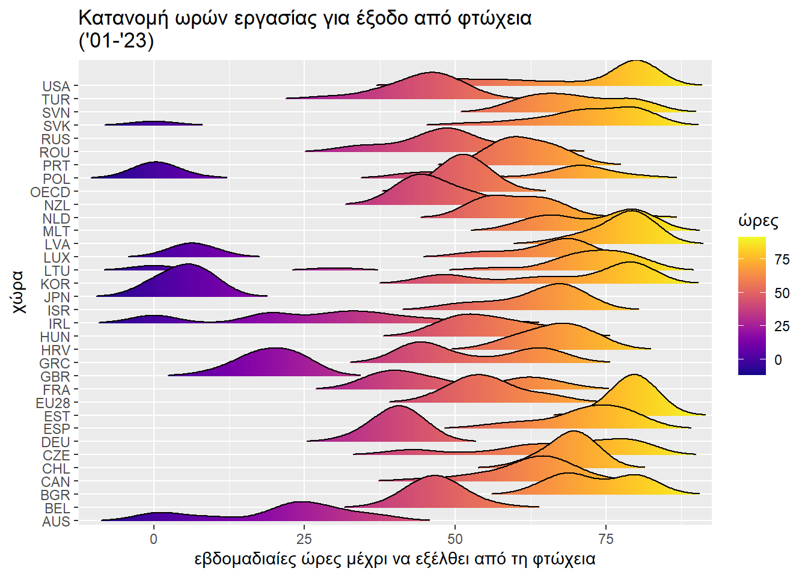
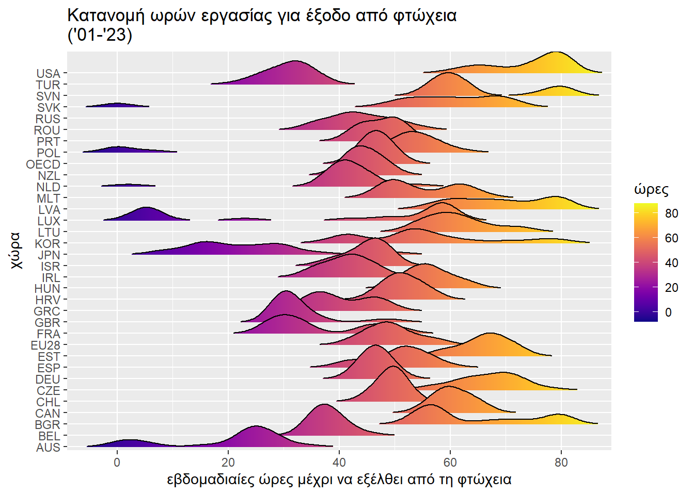
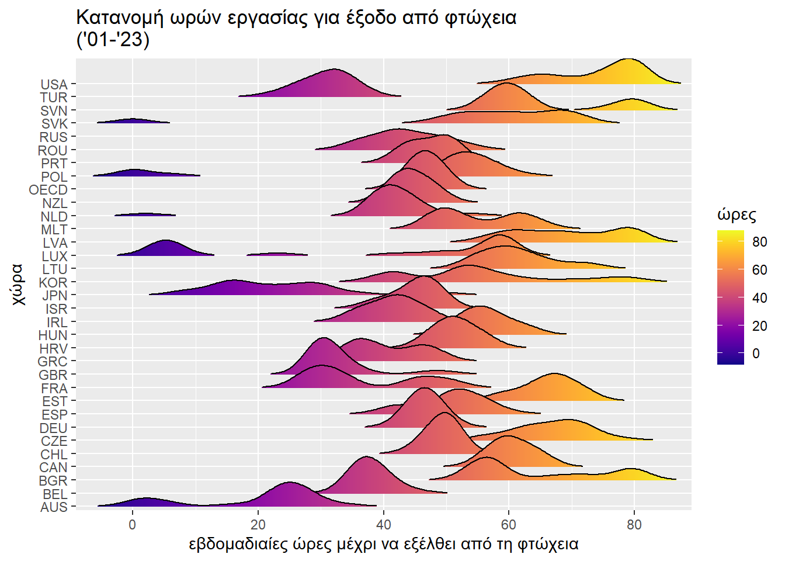
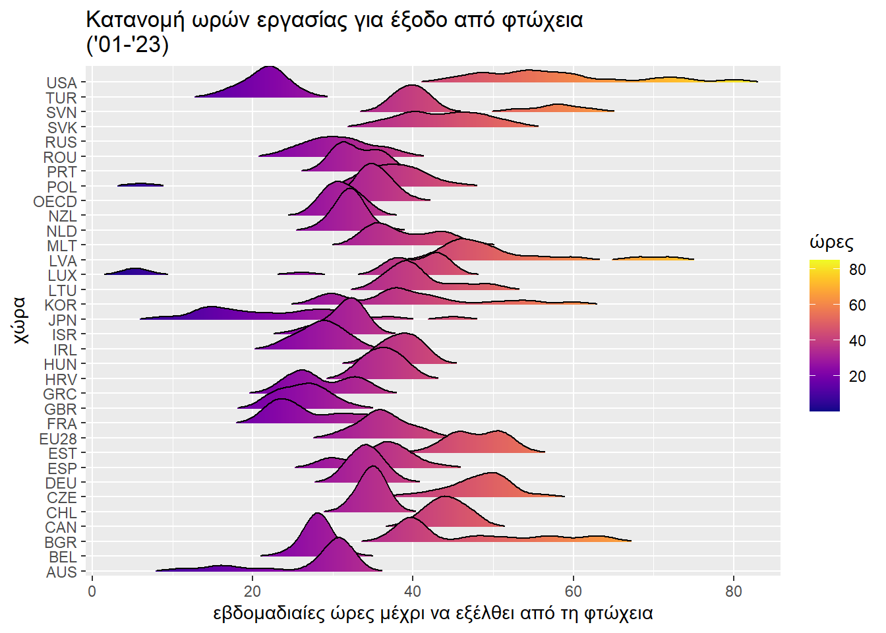
Σε πρώτη φάση θα ερευνήσουμε την εξέλιξη της κατάστασης στην πορεία του χρόνου. Πώς αλλάζει ο κόπος που καταβάλει κάποιος για να βγει από τη φτώχεια; Συγκεκριμένα, συμβαίνει κάτι διαφορετικό παγκοσμίως στο 2023;
Ας δούμε πρώτα την περίπτωση που ένα ζευγάρι έχει 2 παιδιά. Όσον αφορά την περίπτωση της Ελλάδας και της Ε.Ε., φαίνεται ν’ ακολουθούν μια σταθερή μετά από μια πτωτική πορεία οι ώρες εργασίας που απαιτούνται για την έξοδο από την κατάσταση της φτώχειας. Είναι αυτό σημάδι επικείμενης ανόδου, καθόσον πλησίον ενός ελαχίστου οι μεταβολές είναι ανεπαίσθητες; Θέλουμε μελλοντικά δοδομένα γι’ αυτό. Είναι μήπως η πτωτική πορεία τμήμα ενός ευρύτερου σκαμπανεβάσματος; Θέλουμε παλαιότερα δεδομένα γι’ αυτό.
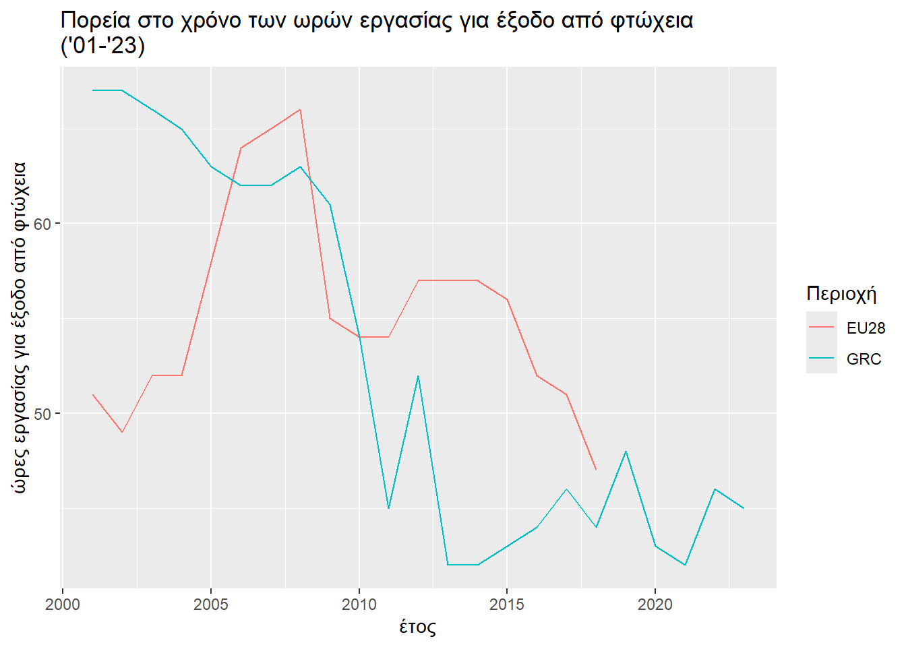
Σε παγκόσμιο επίπεδο, από την άλλη, δεν φαίνεται να υπάρχει κάποια αλλαγή, τόσο καθόλο το διάστημα 2001-23 που μελετάμε, όσο και ίσως ανάμεσα στο 2023 και στις παλαιότερες εποχές.
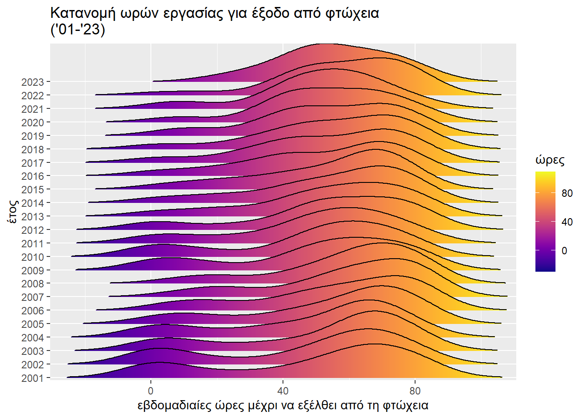
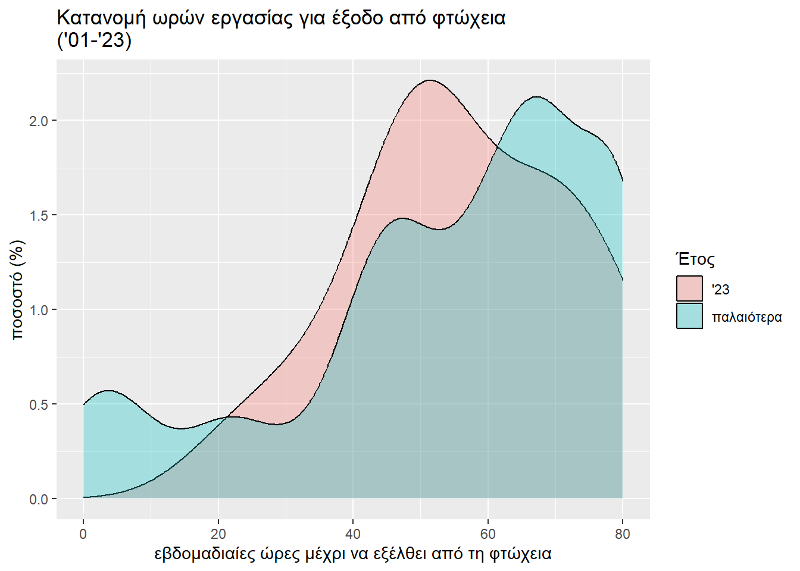
Φαίνεται το ‘23 να είναι ελαφρώς χειρότερο από τα προγηγούμενα έτη; Είναι όμως έτσι; Τι λέει γι’ αυτό ένας έλεγχος Wilcoxon;
##
## Wilcoxon rank sum test with continuity correction
##
## data: OBS_VALUE by is23
## W = 6720.5, p-value = 0.8742
## alternative hypothesis: true location shift is not equal to 0Ο παραπάνω έλεγχος δεν φαίνεται να έδωσε καταφατική απάντηση στο παραπάνω ερώτημα. Τουλάχιστον όχι σε όσους δεν λογίζουν ως σπάνιο ένα ενδεχόμενο που συμβαίνει με πιθανότητα 87.4194036%, όσο δηλαδή η p-τιμή.
Πάμε τώρα να δούμε τι συμβαίνει όταν το ζευγάρι δεν έχει παιδιά. Και πάλι βλέπουμε μια σταθεροποίηση ύστερα από μια πτώση προς τα κάτω. Τα ίδια ερωτήματα που είχαμε θέσει στην ενότητα που μελετάγαμε τα ζευγάρια με δύο παιδιά, τα ίδια μπορούμε να θέσουμε και τώρα, χωρίς φυσικά να μπορούμε και πάλι να δώσουμε απάντηση.
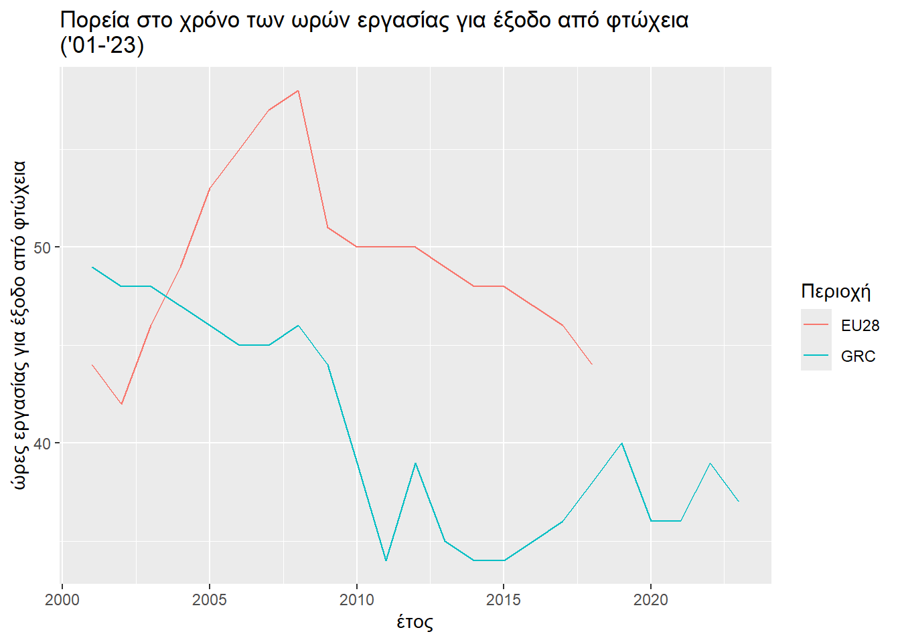
Και σε αυτή την περίπτωση το 2023 φαίνεται να είναι λίγο διαφορετικό αν εστιάσουμε πάνω του, αλλά μέσα στο ευρύτερο κάδρο δεν φαίνεται τελικά να διαφέρει.
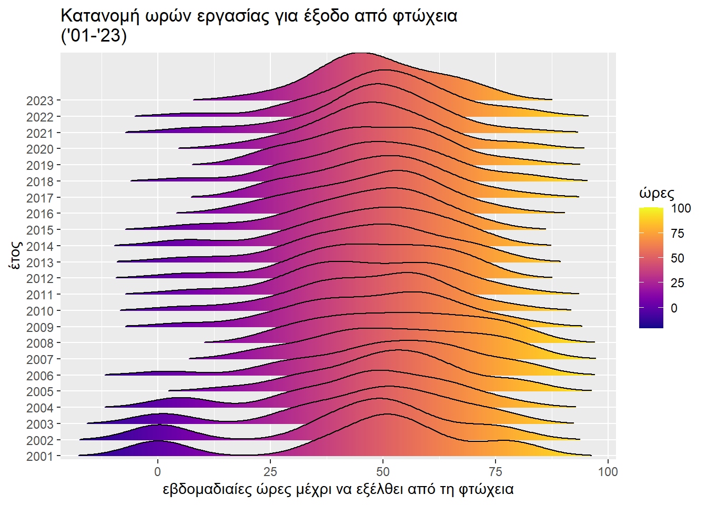
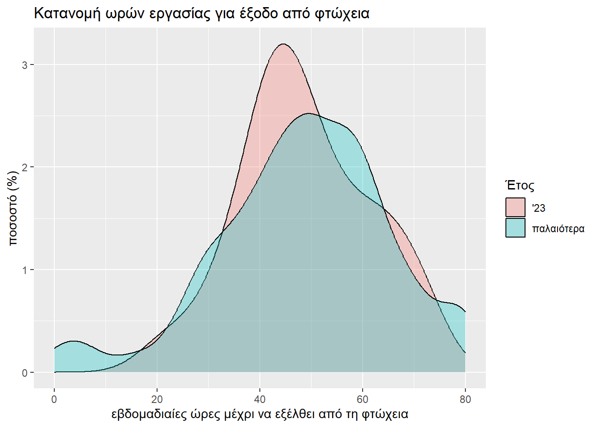
Ο έλεγχος Wilcoxon για άλλη μια φορά δεν μας δίνει δικαίωμα να επικαλεστούμε ότι κάτι διαφορετικό συμβαίνει το ’23.
##
## Wilcoxon rank sum test with continuity correction
##
## data: OBS_VALUE by is23
## W = 6690, p-value = 0.8459
## alternative hypothesis: true location shift is not equal to 0Η περίπτωση αυτή δεν έχει να πει κάτι διαφορετικό από τις δύο άλλες που σχολιάσαμε, οπότε αρκούμαστε μονάχα στην παρουσίαση των γραφημάτων και του ελέγχου Wilcoxon.
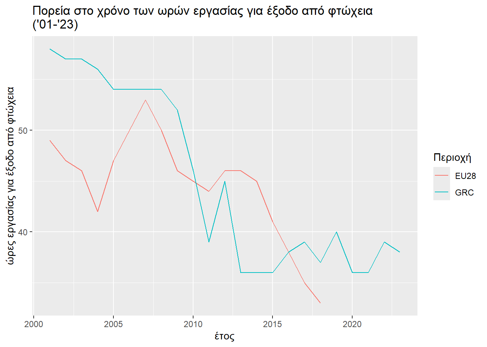
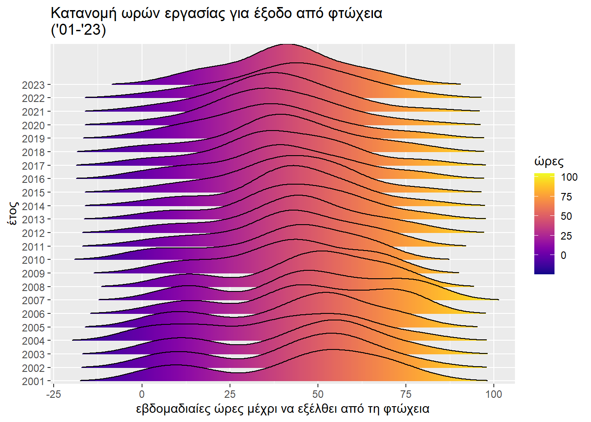
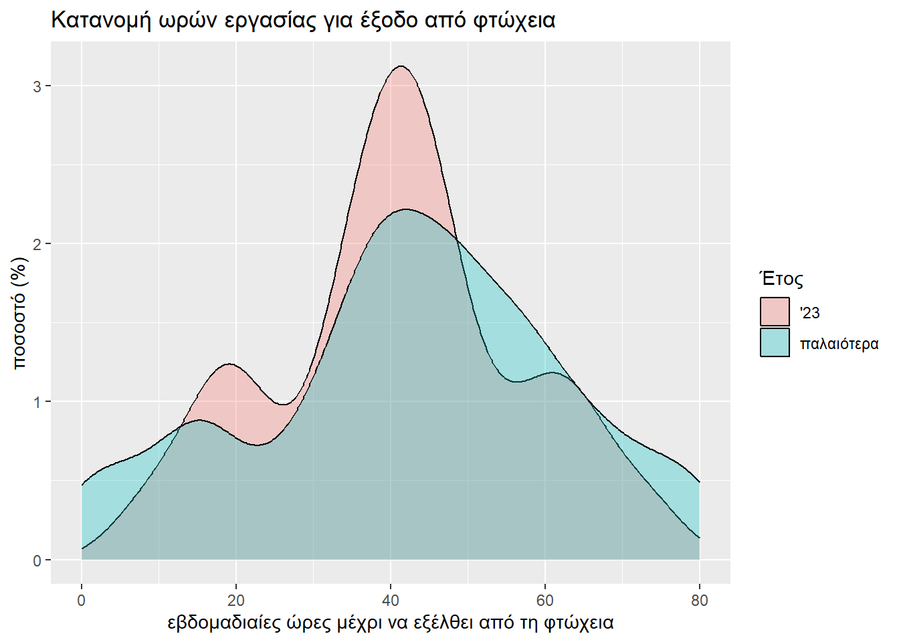
##
## Wilcoxon rank sum test with continuity correction
##
## data: OBS_VALUE by is23
## W = 6450.5, p-value = 0.632
## alternative hypothesis: true location shift is not equal to 0Η περίπτωση αυτή δεν έχει να πει κάτι διαφορετικό από τις δύο πρώτες που σχολιάσαμε, οπότε αρκούμαστε μονάχα στην παρουσίαση των γραφημάτων και του ελέγχου Wilcoxon.
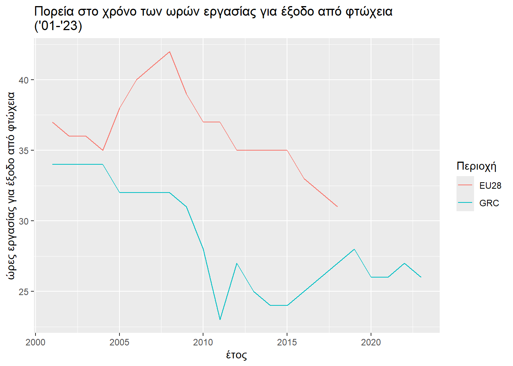
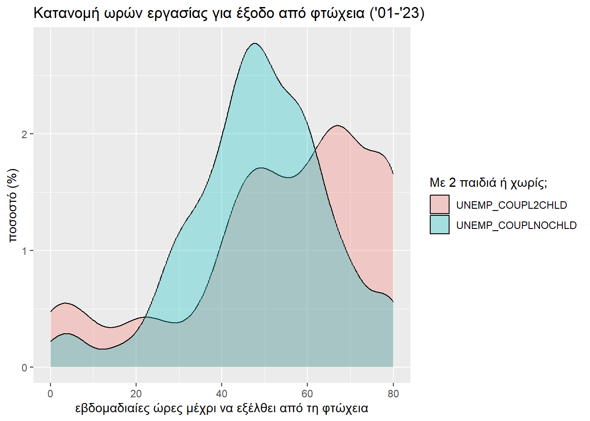
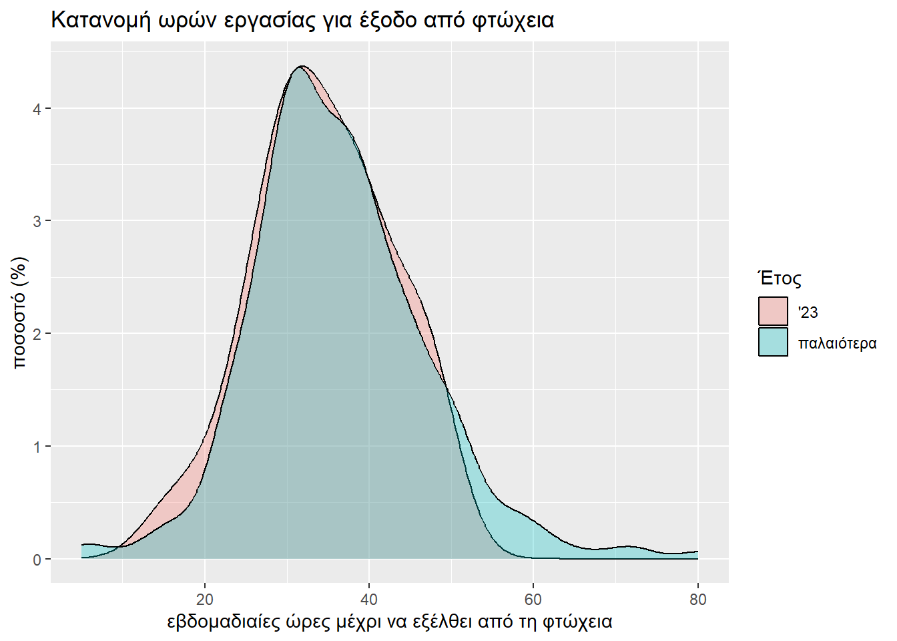
##
## Wilcoxon rank sum test with continuity correction
##
## data: OBS_VALUE by is23
## W = 6307, p-value = 0.5158
## alternative hypothesis: true location shift is not equal to 0Θα εξετάσουμε το ερώτημα «Παίζει ρόλο το να έχεις παιδί;» πρώτα για τα ζευγάρια.
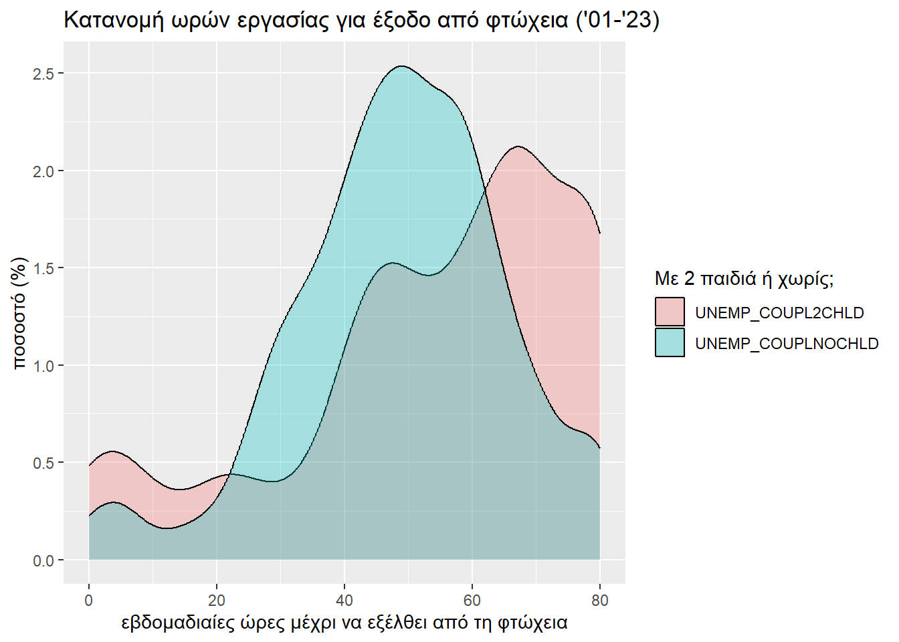
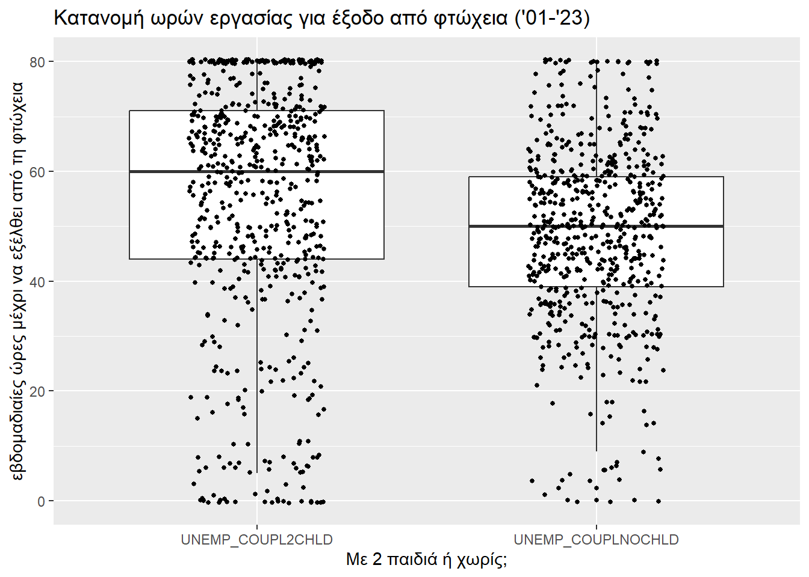
Φαίνεται το ότι να έχει ένα ζευγάρι παιδιά κάνει πιο δύσκολο αυτό να εξέλθει από τη φτώχεια. Ας το ελέγξουμε και με έναν έλεγχο Wilcoxon.
##
## Wilcoxon rank sum test with continuity correction
##
## data: OBS_VALUE by SUBJECT
## W = 237646, p-value = 2.338e-13
## alternative hypothesis: true location shift is not equal to 0Η p-τιμή είναι αρκετά μικρή, ήτοι δείχνει ότι είναι απίθανο η ύπαρξη παιδιών να μην επηρεάζει τον κόπο για να βγει από τη φτώχεια ένα ζευγάρι. Ας εξετάσουμε και το μέγεθος της επίδρασης του παράγοντα «ύπραξη παιδιού».
## # A tibble: 1 × 7
## .y. group1 group2 effsize n1 n2 magnitude
## * <chr> <chr> <chr> <dbl> <int> <int> <ord>
## 1 OBS_VALUE UNEMP_COUPL2CHLD UNEMP_COUPLNOCHLD 0.208 619 619 smallΤο r του Wilcoxon είναι 0.2082686, το οποίο υποδηλώνει μικρό προς μεσαίο μέγεθος επίδρασης.
Τέλος, παρουσιάζουμε την εξέλιξη της διαφοροποίησης μεταξύ του έχειν ή όχι 2 παιδιά στην πορεία του χρόνου.
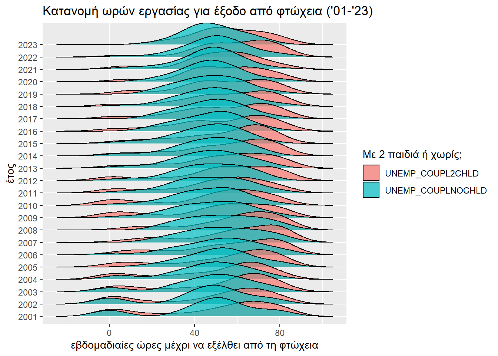
Ας μελετήσουμε τώρα το ερώτημα «Παίζει ρόλο το να έχεις παιδί;» όσον αφορά την περίπτωση του ενος ενήλικα.
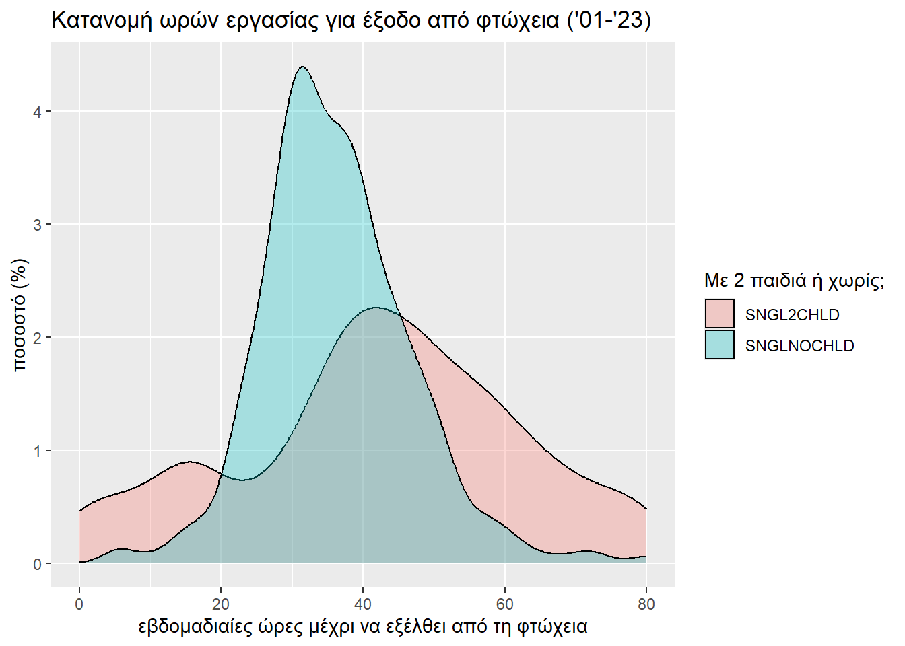
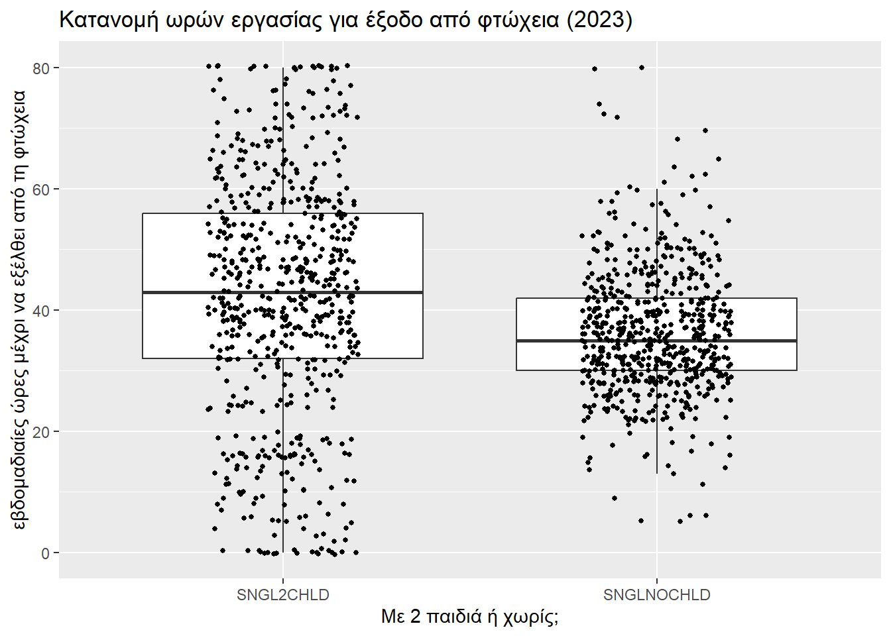
Και σε αυτή την περίπτωση φαίνεται η ύπαρξη παιδιών να κάνει πιο δύσκολη την έξοδο από τη φτώχεια. Είναι όντως έτσι όπως βλέπουν τα μάτια μας;
##
## Wilcoxon rank sum test with continuity correction
##
## data: OBS_VALUE by SUBJECT
## W = 242137, p-value = 8.978e-16
## alternative hypothesis: true location shift is not equal to 0Ο έλεγχος Wilcoxon επιβεβαιώνει με τη μικροσκοπική p-τιμή που εξάγει ότι είναι απίθανο το αντίθετο σενάριο. Ας δούμε και το μέγεθος της επίδρασης των παιδιών.
## # A tibble: 1 × 7
## .y. group1 group2 effsize n1 n2 magnitude
## * <chr> <chr> <chr> <dbl> <int> <int> <ord>
## 1 OBS_VALUE SNGL2CHLD SNGLNOCHLD 0.229 619 619 smallΤο r του Wilcoxon (0.2285096) πάλι διλώνει μικρό προς μεσαίο μέγεθος επίδρασης της ύπαρξης παιδιών στη δυσκολία εξόδου από τη φτώχεια. Βέβαια, είναι σαφώς μεγαλύτερο από την περίπτωση που μελετούσαμε ζευγάρια, κάτι που αντικατοπτρίζει και τις δυσκολίες που αντιμετωπίζει μια μονογονεϊκή οικογένεια.
Και πάλι κάνουμε μια οπτική παρουσίαση της εξέλιξης της επίδρασης του παράγοντα «έχω δύο παιδιά ή καθόλου» στη δυσκολία εξόδου από τη φτώχεια.
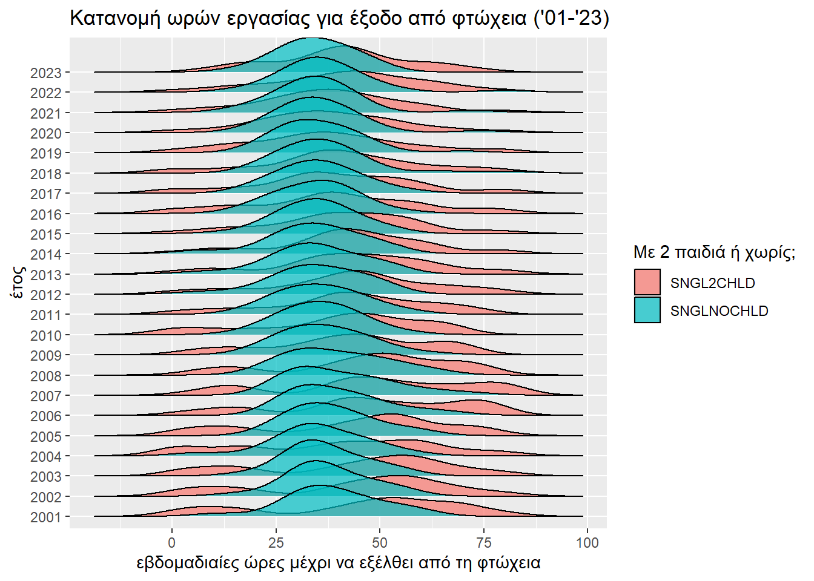
Σε τούτη την ενότητα θα εξετάσουμε αν επιδρά στη δυσκολία εξόδου από τη φτώχεια το να είσαι ζευγάρι ή μόνος.
Πάμε πρώτα να δούμε τι συμβαίνει, αν υπάρχουν δυο παιδιά στην οικογένεια.
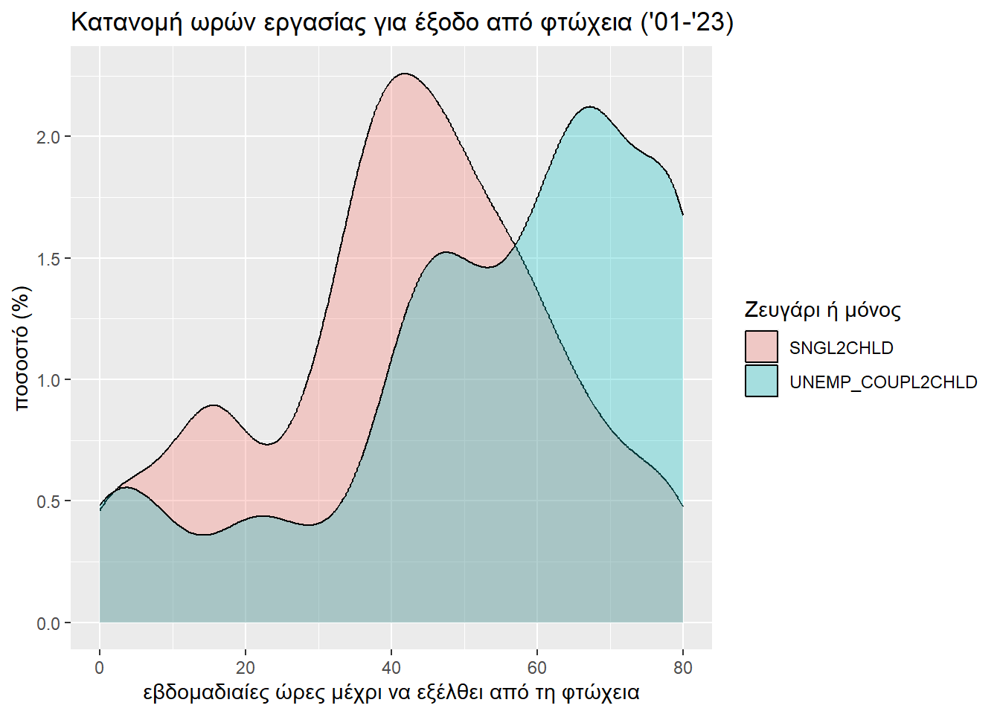
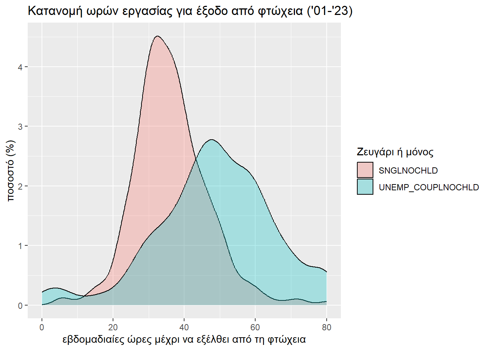
Φαίνεται πως ένα ζευγάρι χρειάζεται περισσότερες ώρες εργασίας για να βγει από την κατάσταση της φτώχειας. Να δούμε τι έχει να πει γι’ αυτό κι ένας έλεγχος Wilcoxon.
##
## Wilcoxon rank sum test with continuity correction
##
## data: OBS_VALUE by SUBJECT
## W = 122641, p-value < 2.2e-16
## alternative hypothesis: true location shift is not equal to 0Η εξαιρετικά μικρή p-τιμή κάνει απίθανο κάθε αντίθετο σενάριο, ενώ παράλληλα το μέγεθος επίδρασης, όπως φαίνεται παρακάτω, δηλώνει μεσαίο μέγεθος επίδρασης.
## # A tibble: 1 × 7
## .y. group1 group2 effsize n1 n2 magnitude
## * <chr> <chr> <chr> <dbl> <int> <int> <ord>
## 1 OBS_VALUE SNGL2CHLD UNEMP_COUPL2CHLD 0.312 619 619 moderateΑκολουθεί για άλλη μια φορά η οπτική αναπαράσταση της εξέλιξης στο χρόνο του ζητήματος που μελετάμε.
Τέλος, παρουσιάζουμε την εξέλιξη στην πάροδο του χρόνου της διαφοροποίησης μεταξύ του να είναι κανείς μόνος ή ζευγάρι.
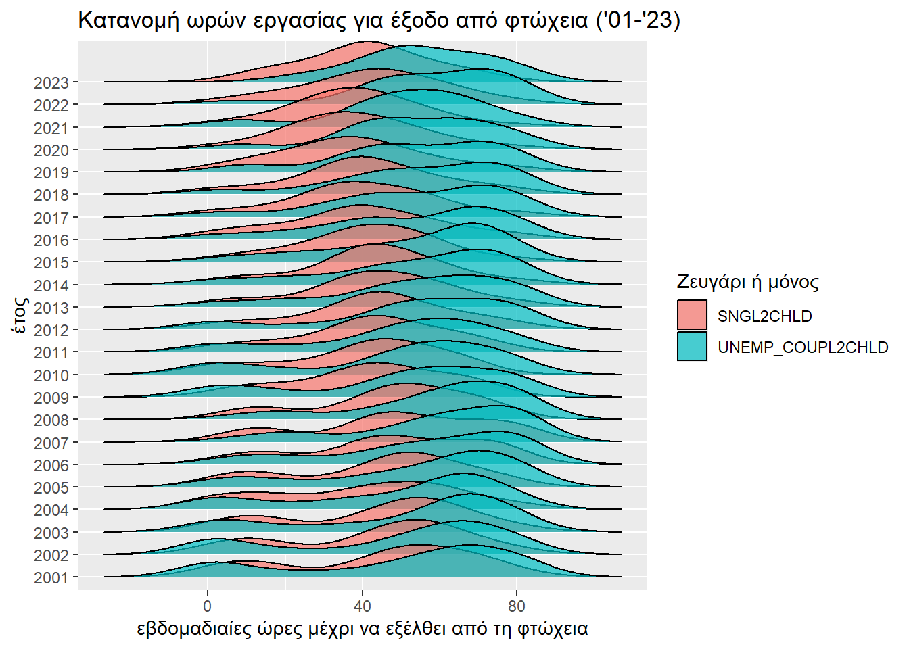
Τι γίνεται στην περίπτωση που δεν υπάρχουν γονεϊκές ευθύνες; Αυτό θα το δούμε τώρα.
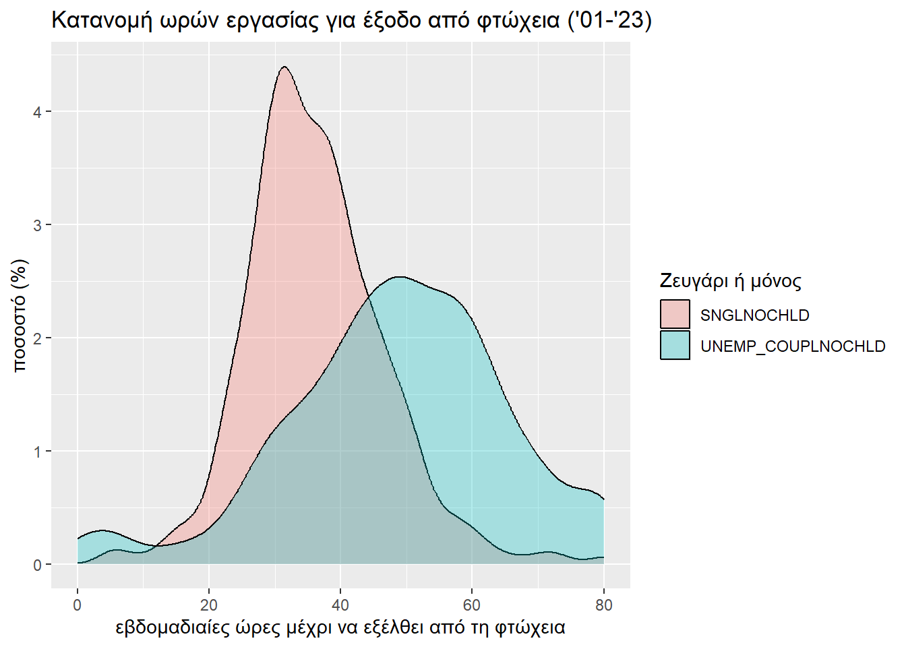
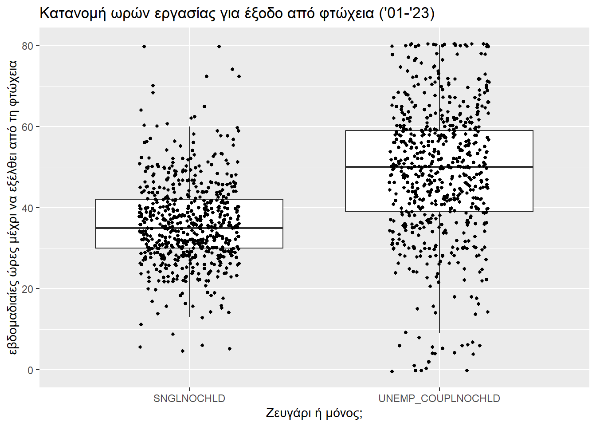
Για άλλη μια φορά ένα ζευγάρι απαιτεί περισσότερες ώρες εργασίας για την έξοδο από τη φτώχεια, πόρισμα που επιβεβαιώνει και ο κάτωθι έλεγχος Wilcoxon.
##
## Wilcoxon rank sum test with continuity correction
##
## data: OBS_VALUE by SUBJECT
## W = 93297, p-value < 2.2e-16
## alternative hypothesis: true location shift is not equal to 0Το μέγεθος επίδρασης αυτή τη φορά είναι μεσαίο προς μεγάλο, όπως δείχνει το r του Wilcoxon.
## # A tibble: 1 × 7
## .y. group1 group2 effsize n1 n2 magnitude
## * <chr> <chr> <chr> <dbl> <int> <int> <ord>
## 1 OBS_VALUE SNGLNOCHLD UNEMP_COUPLNOCHLD 0.444 619 619 moderateΕν τέλει, την πορεία στο χρόνο της διαφοροποίησης μεταξύ του να είναι κανείς μόνος ή ζευγάρι.
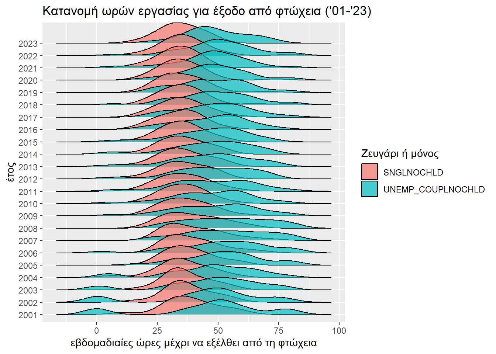